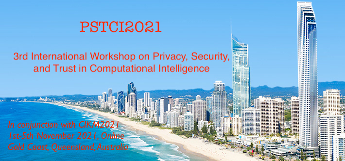

Workshop Theme and Topics
-
New privacy, security and trust opportunities and challenges brought by IoT/edge/cloud to computational intelligence
-
Novel theories and modelling for privacy, security and trust
-
Privacy, security and trust in deep/reinforcement learning models
-
Privacy-preserving big data publishing
-
Privacy-preserving data mining and machine learning
-
Privacy, security and trust issues in federated/collaborative machine learning
-
Secure and scalable machine learning
-
Privacy, security and trust issues in Smart-X technologies
-
Computational intelligence for information security and privacy
-
Security and trust management for computational intelligence frameworks
-
Blockchain for computational intelligence privacy, security and trust
-
Secure hardware design and implementation for computational intelligence
-
Real-world applications for privacy, security and trust based on computational intelligence
-
Information hiding and encryption in computational intelligence
-
Security and privacy issues, trends, and challenges in cloud/edge and IoTs
Submission Guideline
Submission portal: https://xxx.example.com
Important Dates
- Submission deadline: Wednesday 30 June 2021
- Notification date: Monday 9 August 2021
- Camera-ready due: Sunday 22 August 2021
Organization Committees
General Chair
- Guanfeng Liu, Macquarie University, Australia
- Kim-Kwang Raymond Choo, The University of Texas at San Antonio, USA
- Hongzhi Yin, The University of Queensland, Australia
Program Chair
- Xuyun Zhang, Macquarie University, Australia
- Deepak Puthal, Newcastle University, UK
- Chi Yang, Huazhong University of Science and Technology, China
Publicity Chair
- Hongxu Chen, University of Technology Sydney, Australia
Web Chair
- Haolong Xiang, Macquarie University, Australia
Technical Program Committee
- Chunjie Zhou, Ludong University, China
- Chao Chen, Swinburne University of Technology, Australia
- Dieter Gollmann, Hamburg University of Technology, Germany
- Dongseong Kim, University of Queensland, Australia
- Francesco Palmieri, University of Salerno, Italy
- Gaofeng Zhang, Hefei University of Technology, China
- Hadis Karimipour, University of Guelph, Canada
- Hao Wang, Norwegian University of Science and Technology, Norway
- Haolong Xiang, Macquarie University, Australia
- Hongsheng Hu, University of Auckland, New Zealand
- Javier Parra-Arnau, Universitat Rovira i Virgili, Spain
- Jinguang Han, Queen’s University Belfast, UK
- Junwen Lu, Xiamen University of Technology, China
- Kar-Ann Toh, Yonsei University, South Korea
- Lam Kwok Yan, Nanyang Technological University, Singapore
- Liangfu Lv, Tianjin University, China
- Lianyong Qi, Qufu Normal University, China
- Lingjuan Lyu, National University of Singapore, Singapore
- Luigi Catuogno, University of Salerno, Italy
- Lutful Karim, Seneca College of Applied Arts and Technology, Canada
- Meng Liu, Shandong University, China
- Mingzhong Wang, University of the Sunshine Coast, Australia
- Mohammed EI-Abd, American University of Kuwait, KW
- Nathan Clarke, University of Plymouth, UK
- Saeid Hosseini, Sohar University, Oman
- Shunmei Meng, Nanjing University of Science and Technology, China
- Silvio Barra, University of Salerno, Italy
- Vincenzo Moscato, University of Naples, Italy
- Weizhi Meng, Technical University of Denmark, Denmark
- Wenjuan Li, Hong Kong Polytechnic University, Hong Kong
- Wenmin Lin, Hangzhou Normal University, China
- Xiao Liu, Deakin University, Australia
- Xiaochun Cheng, Middlesex University, UK
- Xiaolong Xu, Nanjing University of Information Science and Technology, China
- Xuan Zhao, Nanjing University, China
- Yanwei Xu, Tianjin University, China
- Yifeng Zheng, CSIRO, Australia
- Yirui Wu, Hohai University, China
- Zhiyuan Tan, Edinburgh Napier University, UK